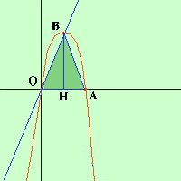
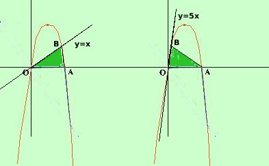

|
Data la parabola y= - x2 + 6x indicate con O ed A le intersezioni fra la parabola e l'asse delle x, indicata poi con B l'ulteriore intersezione fra la retta y = kx e la parabola determinare il valore di k perche' l'area del triangolo OAB abbia valore 15 unita' quadrate del piano  ripetendo quanto detto nell'esercizio precedente il metodo generale perrisolvere questi problemi e' quello di procedere come se al posto del parametro ci fosse un numero qualunque: una volta trovato il dato che viene posto come condizione si uguaglia tale dato con quello fornito dal problema: si ottiene un'equazione che, risolta, ci da' il valore del parametro cercato a destra la rappresentazione grafica che in questi casi e' molto utile Rappresentazione grafica della parabola in questo caso il dato e' l'area del triangolo OAB. Per trovare l'area devo trovare la misura della base e dell'altezza La base e' OA, A e' l'intersezione fra la parabola e l'asse x cioe' y = 0 y = 0 ho le soluzioni
A(6,0) e la base OA del triangolo OAB vale 6 ora devo trovare le coordinate dell' intersezione B fra la retta y=kx e la parabola y= - x2 + 6x l'altezza BH corrispondera' alla coordinata y di B Faccio il sistema fra la retta e la parabola y = kx y = kx -------- -------- e' un'equazione di secondo grado spuria ed ottengo x = 0 x = 6-k quindi avro' le soluzioni
la seconda corrisponde al punto B(6-k, 6k - k2) Quindi l'altezza del triangolo vale 6k - k2 AREA = 0A ·BH / 2 = 6(6k - k2) / 2 = 3(6k - k2) = 18k - 3k2 AREA = 15 quindi dobbiamo risolvere -3k2 + 18k = 15 cambio di segno 3k2 - 18k = -15 3k2 - 18k + 15 = 0 divido tutto per 3 k2 - 6k + 5 = 0 Risolvo ed ottengo calcoli x = 1 x = 5 Avremo quindi due possibilita',  entrambe con il punto B nel primo quadrante e la retta potra' essere la bisettrice del primo quadrante (y=x) oppure una retta con crescita molto piu' marcata (y=5x), in modo che i triangoli siano tra loro simmetrici rispetto all'asse della parabola Geometricamente sarebbe possibile avere altre due soluzioni, con la retta che passa nel secondo e nel quarto quadrante, ma, in tal caso, il triangolo avrebbe area negativa (assurdo) perche' l'altezza del triangolo sarebbe un numero negativo essendo il vertice una volta nel terzo ed una volta nel quarto quadrante. Se, per esercizio, vuoi generalizzare il problema, avrai bisogno di utilizzare il concetto di modulo : otterrai come equazione per l'area -3k2 + 18k = |15| |